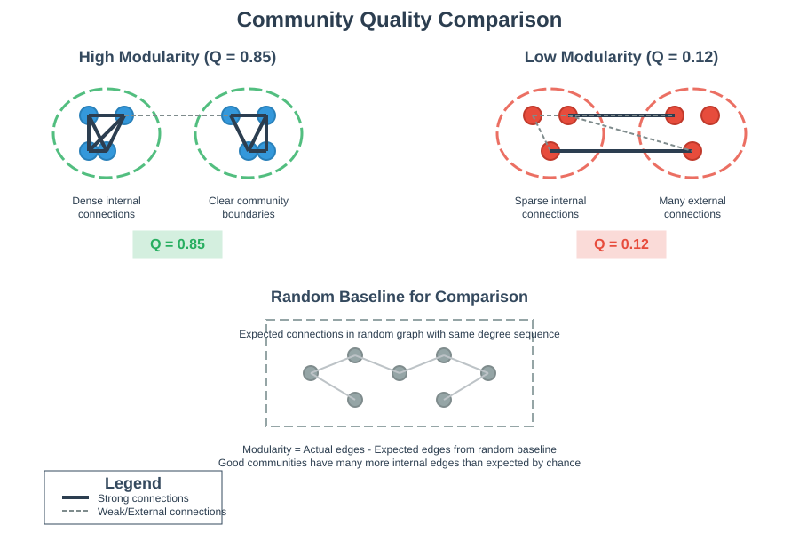
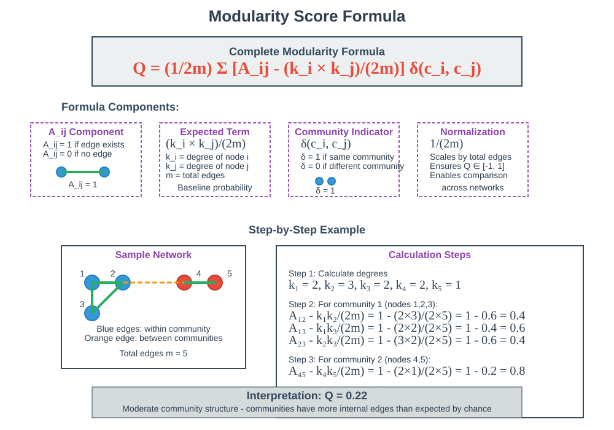
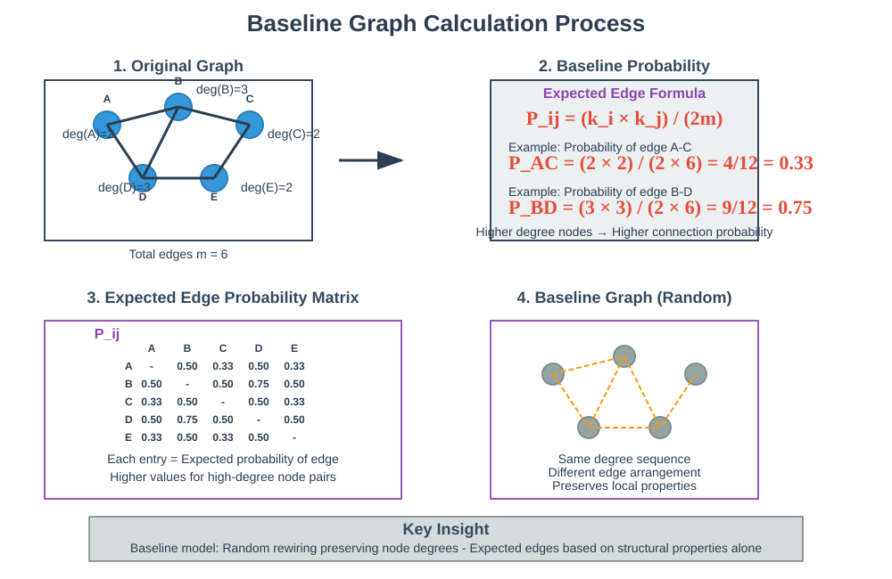
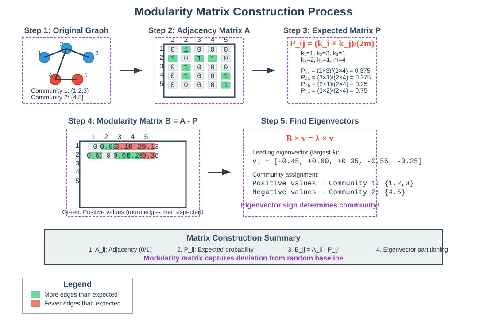
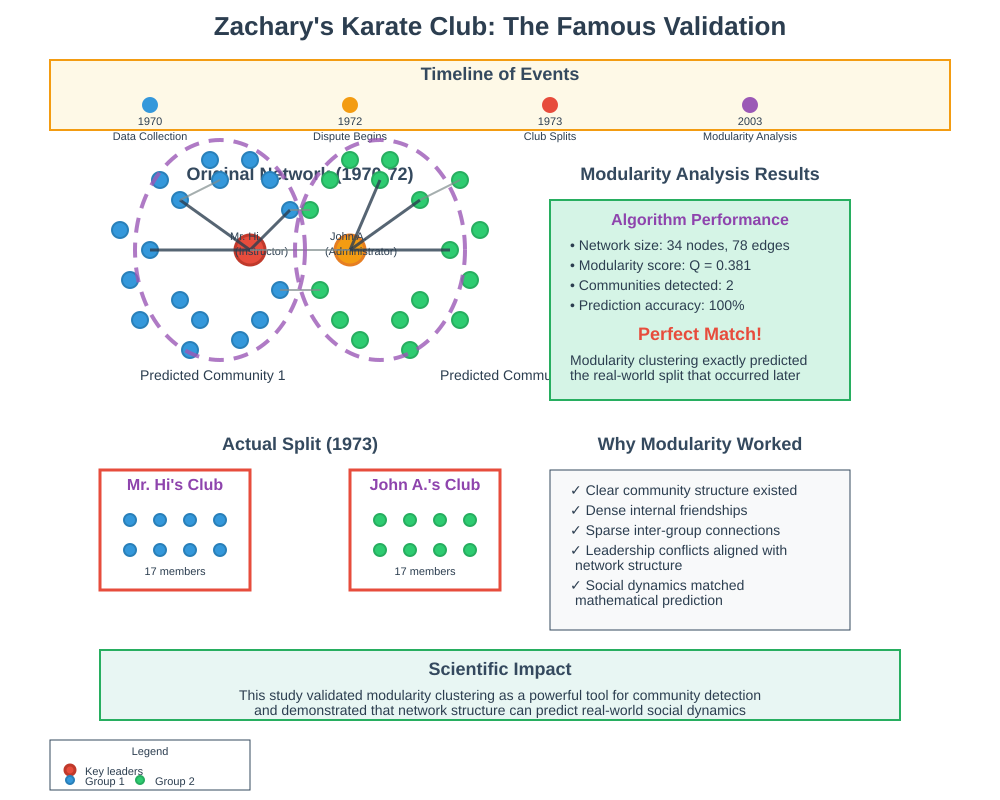

Modularity Clustering for Community Detection
🧭 Quick Navigation
- Overview
- Core Concepts
- Modularity Score Formula
- Baseline Graph Model
- Eigenvector Approach
- Real-World Applications
- Implementation Examples
- References & Further Reading
🎯 Overview
Modularity Clustering is a powerful unsupervised method for detecting communities in network graphs that automatically determines the optimal number of communities without requiring prior specification. Unlike spectral clustering methods that need predefined cluster counts, modularity clustering maximizes a quality metric called the modularity score to identify natural community structures.

Key Advantages
- 🔄 Automatic cluster detection - No need to specify number of communities
- 📊 Quality-driven - Uses modularity score optimization
- 🌐 Widely applicable - Works across various network types
- ⚖️ Baseline comparison - Compares against random network models
🧠 Core Concepts
Community Quality Measurement
The fundamental idea behind modularity clustering is to identify communities that have significantly more internal connections than would be expected in a random baseline graph with similar properties.

The Baseline Principle
Good communities should have:
- High internal connectivity - Many edges within the community
- Significant deviation from random - More connections than baseline expectation
- Clear boundaries - Fewer connections to other communities
Modularity Score Interpretation
| Score Range | Interpretation | Community Quality |
|---|---|---|
| Q > 0.7 | Excellent | Very strong community structure |
| 0.4 - 0.7 | Good | Clear community boundaries |
| 0.1 - 0.4 | Moderate | Weak but detectable structure |
| Q ≈ 0 | Random | No significant community structure |
| Q < 0 | Anti-community | Fewer internal edges than expected |
📊 Modularity Score Formula
Mathematical Foundation
The modularity score for a given partitioning is calculated as:
Where: - Aij = 1 if there's an edge between nodes i and j, 0 otherwise - Pij = Expected number of edges between i and j in baseline graph

Normalized Modularity
The complete modularity formula includes normalization:
Where: - m = Total number of edges in the graph - ki = Degree of node i - δ(ci, cj) = 1 if nodes i and j are in the same community, 0 otherwise
Community-Level Calculation
For multiple communities, the total modularity is:
🎲 Baseline Graph Model
Expected Edge Probability
The baseline model calculates the expected probability of an edge between nodes i and j:

Configuration Model Properties
The baseline (configuration) model preserves:
- ✅ Total number of edges
- ✅ Degree sequence of all nodes
- ✅ Graph density
- ❌ Specific edge arrangements (randomized)
Example Calculation
For a node with degree 3 connected to another node with degree 3 in a graph with 17 total edges:
This means there's a 26% chance these nodes would be connected in the baseline model.
🧮 Eigenvector Approach
Matrix Construction
Modularity clustering uses eigenvector analysis on the modularity matrix B:

Eigenvector Analysis Steps
- Construct modularity matrix B with entries (Aij - Pij)
- Calculate eigenvectors of matrix B
- Select leading eigenvector (largest eigenvalue)
- Partition nodes based on eigenvector sign:
- Positive values → Community 1
- Negative values → Community 2
Multi-Community Extension
For more than two communities:
- Recursive bisection - Apply binary splitting repeatedly
- Multiple eigenvectors - Use additional eigenvectors for finer partitioning
- Eigenvalue significance - Only use eigenvectors with positive eigenvalues
Negative Eigenvalues
Negative eigenvalues indicate: - Anti-communities - Fewer internal edges than expected - Bipartite structures - Natural separation patterns - Functional groupings - E.g., verbs vs nouns in text networks
🌍 Real-World Applications
Zachary's Karate Club
The most famous validation of modularity clustering:
Background: Social network of 34 members of a karate club at a US university (1970)
Experiment: Club split due to internal dispute
Result: Modularity clustering predicted the exact split before it happened!

Application Domains
| Domain | Network Type | Community Meaning |
|---|---|---|
| Social Media | User connections | Interest groups, friend circles |
| Biology | Protein interactions | Functional modules, pathways |
| Neuroscience | Brain connectivity | Functional brain regions |
| Technology | Software dependencies | Module clusters, subsystems |
| Economics | Trade networks | Economic blocs, market segments |
| Linguistics | Word co-occurrence | Semantic categories, grammar types |
Text Analysis Example
In word co-occurrence networks: - Circles (nouns) rarely connect to other circles - Squares (verbs) connect to both circles and squares - Modularity clustering naturally separates parts of speech
💻 Implementation Examples
Google Colab Notebooks

Python Implementation
import numpy as np
import networkx as nx
from scipy.sparse.linalg import eigsh
def modularity_clustering(adjacency_matrix):
"""
Perform modularity clustering on a graph
Parameters:
adjacency_matrix: 2D numpy array representing graph adjacency
Returns:
communities: list of community assignments
modularity_score: achieved modularity value
"""
A = adjacency_matrix
n = A.shape[0]
m = np.sum(A) / 2 # Total edges
# Calculate degree sequence
degrees = np.sum(A, axis=1)
# Construct modularity matrix
B = A - np.outer(degrees, degrees) / (2 * m)
# Find leading eigenvector
eigenvals, eigenvecs = eigsh(B, k=1, which='LA')
leading_eigenvec = eigenvecs[:, 0]
# Partition based on eigenvector sign
communities = (leading_eigenvec >= 0).astype(int)
# Calculate modularity score
modularity_score = calculate_modularity(A, communities)
return communities, modularity_score
def calculate_modularity(A, communities):
"""Calculate modularity score for given partitioning"""
n = A.shape[0]
m = np.sum(A) / 2
degrees = np.sum(A, axis=1)
Q = 0
for i in range(n):
for j in range(n):
if communities[i] == communities[j]:
Q += A[i, j] - (degrees[i] * degrees[j]) / (2 * m)
return Q / (2 * m)
NetworkX Integration
import networkx as nx
from networkx.algorithms import community
# Load graph
G = nx.karate_club_graph()
# Apply modularity clustering
communities = community.greedy_modularity_communities(G)
# Calculate modularity
modularity = community.modularity(G, communities)
print(f"Found {len(communities)} communities")
print(f"Modularity score: {modularity:.3f}")
Scikit-learn Style Interface
from sklearn.base import BaseEstimator, ClusterMixin
class ModularityClustering(BaseEstimator, ClusterMixin):
def __init__(self, resolution=1.0, random_state=None):
self.resolution = resolution
self.random_state = random_state
def fit(self, X):
# X is adjacency matrix or edge list
self.labels_ = self._modularity_clustering(X)
return self
def fit_predict(self, X):
return self.fit(X).labels_
🔗 References & Further Reading
📚 Foundational Papers
-
Newman, M. E. J. (2006)
"Modularity and community structure in networks"
Proceedings of the National Academy of Sciences
📄 Paper -
Newman, M. E. J. & Girvan, M. (2004)
"Finding and evaluating community structure in networks"
Physical Review E
📄 Paper -
Fortunato, S. (2010)
"Community detection in graphs"
Physics Reports - Comprehensive survey
📄 Paper
🔧 Software Libraries
-
NetworkX Documentation
Community detection algorithms
🐍 NetworkX Community -
igraph Package
High-performance network analysis
📦 igraph -
scikit-network
Machine learning on graphs
🔬 scikit-network
🎓 Educational Resources
-
"Networks, Crowds, and Markets" by Easley & Kleinberg
Chapter 3: Strong and Weak Ties
📖 Free Online Book -
Stanford CS224W Course
Machine Learning with Graphs
🎥 Lectures
🤝 Contributing
Found an error or want to improve this documentation?
- 🐛 Report issues on our GitHub repository
- 🔄 Submit pull requests with improvements
- 💡 Suggest new examples or applications
- 📝 Help with documentation clarity and accuracy
Last Updated: September 2025
License: MIT License
Maintainer: AI Research Community